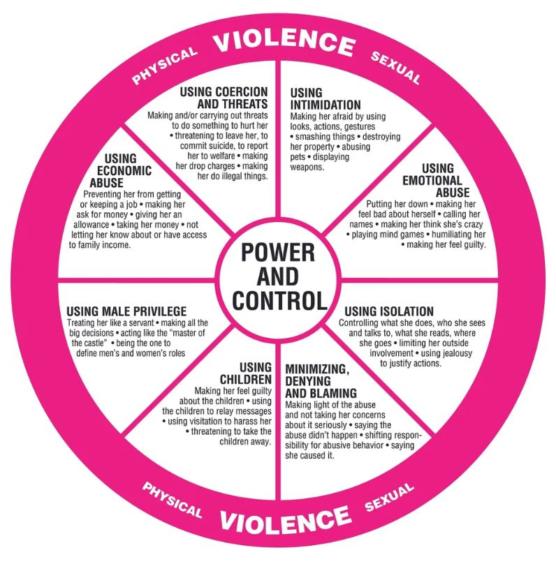

Emotional Abuse
Manipulation, insults, humiliation, intimidation, and controlling behavior.
Financial Abuse
Controlling money, preventing employment, or creating financial dependence.
Isolation
Preventing contact with family, friends, support systems, and using jealousy to justify their actions.
Threats
Threatening harm to you, children, pets, or loved ones.
Physical Abuse
Hitting, pushing, choking, restraining, or any physical violence.
Sexual Abuse
Any forced or unwanted sexual contact or coercion.
Digital Stalking
Tracking phones, monitoring accounts, over-monitoring location, or online harassment.
Community Support Spotlight

Learn more about domestic violence awareness, survivor support, and advocacy resources.
Visit Finding Our Voices